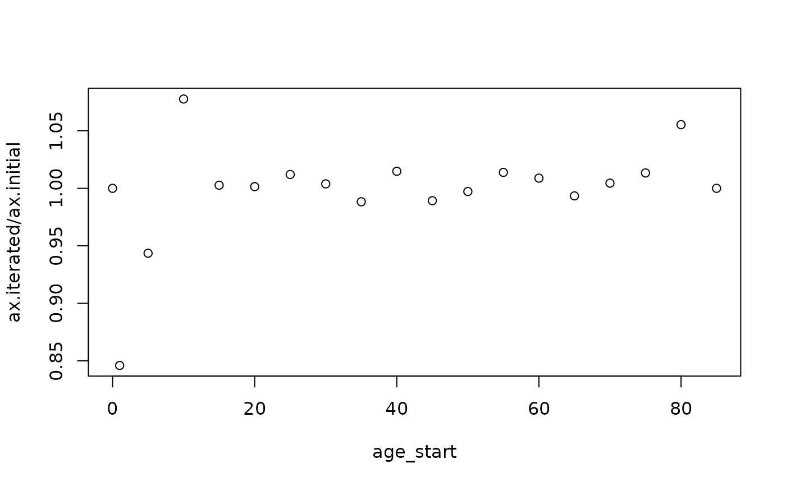

Implement iteration method to minimize the difference across initialized ax and its expected relationship with dx. This method can be used to start with naive values of ax (like age_length/2) and arrive at more informed ax values based on an approximation that assumes a relationship between ax and the age pattern of deaths (dx) in a cohort. Since dx is often calculated using the mx --> ax --> qx method in the first place, initialization and iteration is required.
iterate_ax(dt, id_cols, n_iterations = 30L, threshold = 0.01, quiet = F)
gen_ax_from_dx(dt, id_cols, validate_arguments = T)[data.table()]
Life tables with columns: all id_cols, 'age_start', 'age_end', 'dx',
'ax', 'qx', 'mx'.
[character()]
Columns that uniquely identify each row
of dt. Must include 'age_start' and 'age_end'.
[integer(1)]
Maximum number of iterations to run.
[numeric(1)]
How far apart should ax and the implied ax from dx be before removal from
iteration.
[logical(1)]
Whether to omit messages about iteration progress. Default is F and
progress messages are given.
[logical(1)]
Whether to validate that the input arguments are formatted correctly.
Default is 'TRUE'.
[data.table()]
Input life tables with ax, dx, qx modified.
Input mx is unchanged. iterate_ax makes a copy while gen_ax_from_dx
modifies in place.
iterate_ax: Implement ax iteration.
gen_ax_from_dx: Calculate ax from dx without iteration. This is used as a
helper function within iterate_ax but can also be used independently when
dx is believed to be accurate. The complete relationship is:
$$_na_x = \frac{-\frac{n}{24} {_nd_{x-n}} + \frac{n}{2} {_nd_x} +
\frac{n}{24} {_nd_{x+n}}}{_nd_x}$$
See the references page
for the formatted equation.
Limitations: this method relies on initialized ax and dx values, and cannot produce estimates for the first and last age groups. Preston pg 45.
Note: this is not the best method for ages under 5 years. See
gen_u5_ax_from_mx().
Preston Samuel H, Patrick H, Michel G. Demography: measuring and modeling population processes. MA: Blackwell Publishing. 2001.
Preston Demography book pg 45. Also, see more details on this
method explained in the introduction to life tables vignette:
vignette("introduction_to_life_tables", package = "demCore")
data("austria_1992_lt")
dt <- austria_1992_lt[,.(age_start, age_end, age_length, mx, ax, qx, dx, lx)]
new_dt <- iterate_ax(dt, id_cols = c("age_start", "age_end"))
#> Iteration 1
#> Number of remaining life tables: 1
#> Min. | 1st Qu. | Median | Mean | 3rd Qu. | Max.
#> 0.25 | 0.25 | 0.25 | 0.25 | 0.25 | 0.25
#> Iteration 2
#> Number of remaining life tables: 0
#> Iterations done
# plot change in qx, ax, lx, dx, mx
dt <- merge(dt, new_dt, by = c("age_start", "age_end"))
data.table::setnames(dt, c("ax.x", "ax.y"), c("ax.initial", "ax.iterated"))
plot(data = dt, ax.iterated/ax.initial ~ age_start)
